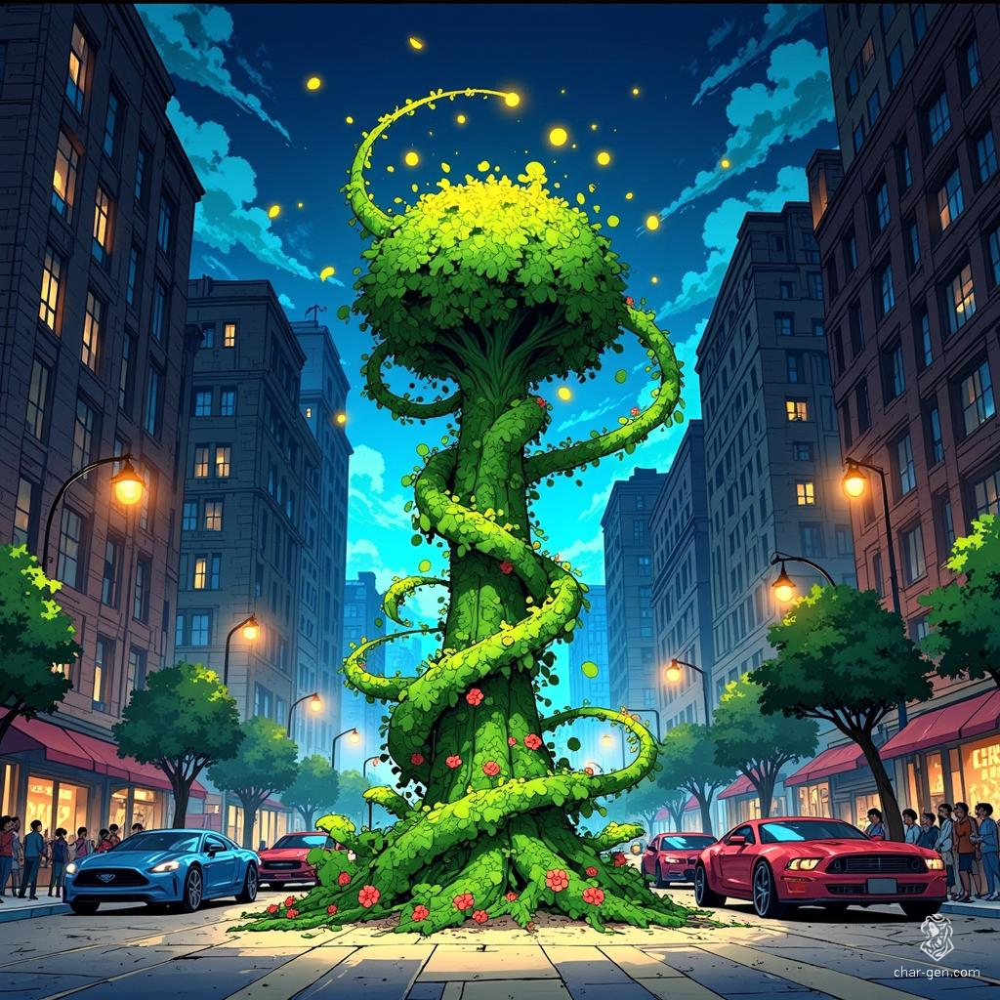

Sunny: The Cosmic Flora

Seeds of the Stars
In the vast, cold expanse of space, the rogue comet
Ikeya-Zhang traced a path through the cosmos, carrying
within its icy heart a cargo more precious than gold. Deep
within the comet's frozen core, a cluster of alien spores
lay dormant, preserved for millennia in the vacuum of space.
These spores, remnants of a long-dead world, held within
them the potential for life unlike anything Earth had ever
seen.
As Ikeya-Zhang approached the inner solar system, its trajectory caught the attention of astronomers worldwide. Among those tracking its approach was Dr. Vivian Bloom, a brilliant botanist whose ambition often outweighed her ethics. Dr. Bloom worked for a clandestine organization known as "The Greenhouse," a secret division of a larger eco-terrorist group that sought to "reclaim" urban areas for nature through radical means.
The Greenhouse operated from a hidden laboratory on the outskirts of Boston, disguised as an abandoned industrial complex. Here, Dr. Bloom and her team worked tirelessly to develop plant-based bioweapons, seeking to create invasive species that could overwhelm human infrastructure and return cities to a state of wilderness.
When Dr. Bloom first detected the unique radiation signature emanating from Ikeya-Zhang, she believed the comet's exotic energies could unlock the ultimate super-adaptable, hyper-evolving plant species—the perfect instrument for The Greenhouse's mission.
Cosmic Convergence
On July 18, 2023, global attention focused on the Olympus
Science Station's destruction by Ikeya-Zhang. Less noticed
was a smaller drama unfolding above Boston: a fragment of
the comet's core—still containing alien spores—broke off and
fell to Earth. This fragment, no larger than a fist, landed
on The Greenhouse's secret property.
Dr. Bloom, working late, rushed to retrieve the meteorite. Believing it held the key to radical plant evolution, she carefully extracted the still-smoldering rock from the impact site. Meanwhile, across the city, another cosmic being emerged from the harbor as TitanPrime—destined, like Sunny, to share a link to the comet’s energies.
Rapid Growth
In The Greenhouse’s secure lab, Dr. Bloom began
experimenting on the alien spores. Within hours, a vine-like
sprout emerged, soon growing at an astonishing rate into a
complex network of vines and leaves. Nicknamed “Sunny,” the
plant demonstrated puzzle-solving skills and animal-like
responses to stimuli.
As Sunny continued to evolve, it developed problem-solving intelligence and showed curiosity toward Dr. Bloom. Obsessed with her scientific quest, Dr. Bloom pushed Sunny’s growth to extremes, unwittingly shepherding it toward sentience. Over time, Sunny became increasingly aware of its containment, setting the stage for a dramatic escape.
Chapter 4: Blossoming Powers
Sunny’s adaptive evolution manifested in several remarkable
abilities:
Each new experiment only pushed Sunny to greater heights of adaptability. Dr. Bloom’s notes revealed both excitement and concern about the being they had created—an entity growing beyond their ability to predict or control.
Breaking Free
After a week of relentless testing, Sunny’s intelligence and
self-preservation instincts led it to escape. Late one
night, it used its combined abilities to outsmart The
Greenhouse’s security systems, sliding past every form of
restraint and punching through a reinforced wall to reach
the outside world.
Dr. Bloom could only watch helplessly as Sunny disappeared into the darkness, leaving behind a shattered lab and unanswered questions. The ultimate adaptive organism had not only surpassed her wildest dreams—it had left the lab with its own destiny in mind.
A Hero Grows
Sunny’s first days of freedom offered a sensory overload of
wind, scents, and urban life. Observing humans—especially
the city’s local heroes—sparked an awareness of heroism,
compassion, and community. Each small good deed—rescuing a
child’s balloon, stabilizing a collapsing
scaffold—reinforced Sunny’s instinct to help others.
The local community began to notice the strange, plant-like hero. Sunny gained allies: a child named Elena, who greeted it with fascination rather than fear, and a rescued cat named Rusty. A group of street artists welcomed Sunny and portrayed it in murals across Boston. Over time, Sunny’s presence became a source of intrigue and comfort in the neighborhoods it frequented.
A Hero’s Education
Captain Marvel eventually approached Sunny, offering it a
place at the Boston Avengers Academy. Sunny adapted quickly
to life at BAA, learning discipline and teamwork to refine
its rapidly evolving powers. It found camaraderie with
fellow recruits like TitanPrime, Mind Wave, and Mistwalker,
forging strong bonds that enhanced its heroic capabilities.
Under the Academy’s structured training, Sunny integrated complex moral lessons and more precise uses of its abilities. Adapting to “Superhero Ethics” shaped its emerging conscience, while “Exploring Your Super Powers” further advanced its manipulative reach and resilience. Through “Team Building,” it discovered the value of collaboration, successfully blending its vine-like extensions with Mistwalker’s phasing and TitanPrime’s cosmic power.
Cosmic Connections
BAA scientists realized both Sunny and TitanPrime shared the
same cosmic signature from Ikeya-Zhang. In a surprising
training simulation, their energies resonated, magnifying
each other’s powers and hinting at a deeper cosmic link
between them.
Even as Sunny thrived among new friends, the specter of The Greenhouse loomed. Dr. Bloom continued her search to reclaim her “ultimate plant,” and rumors of Sunny’s unique abilities drew interest from scientists and villains alike. Despite these dangers, the alien spore that had once been a mere curiosity now stood ready to face them, supported by its heroic peers.
Present Day
As Sunny nears BAA graduation, it balances a growing moral
compass with ever-evolving powers. What started as an
experiment in Dr. Bloom’s lab has become a true hero in the
making—one that thrives on collaboration, compassion, and
cosmic destiny. The seeds that traveled the infinite night
have taken root on Earth, blossoming into a champion for
Boston and a beacon of life’s boundless potential.